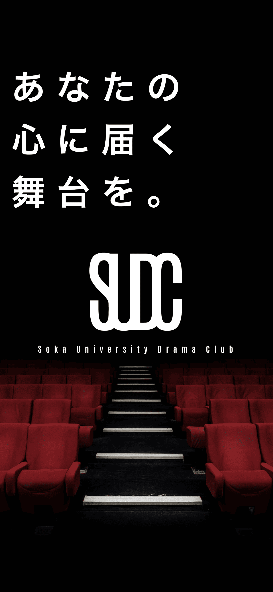
SWIPE
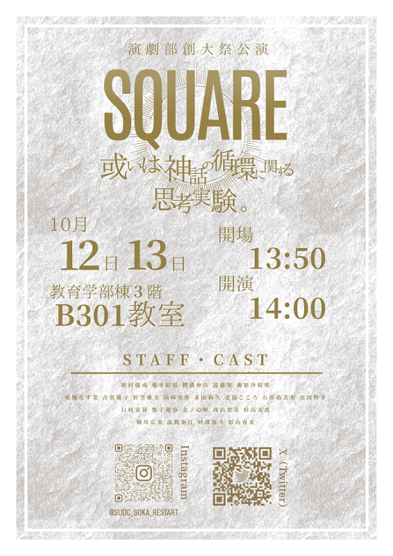
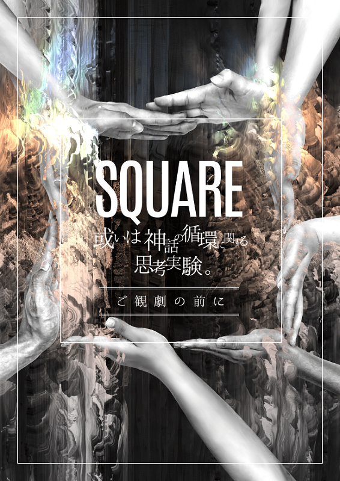
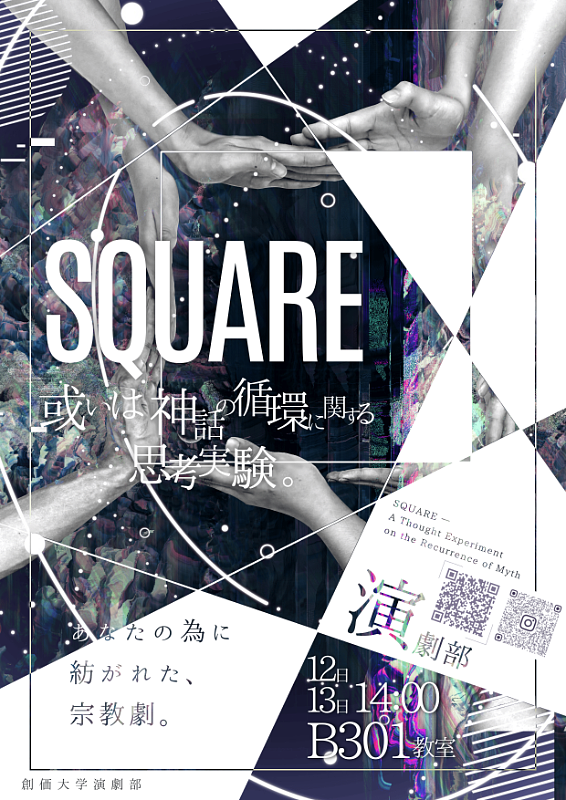
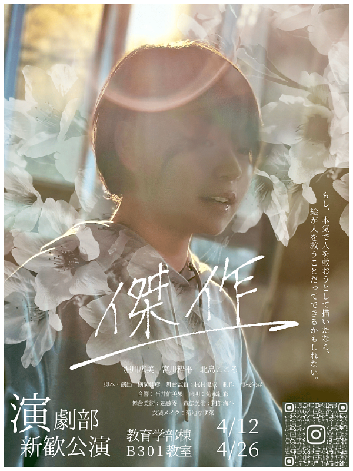
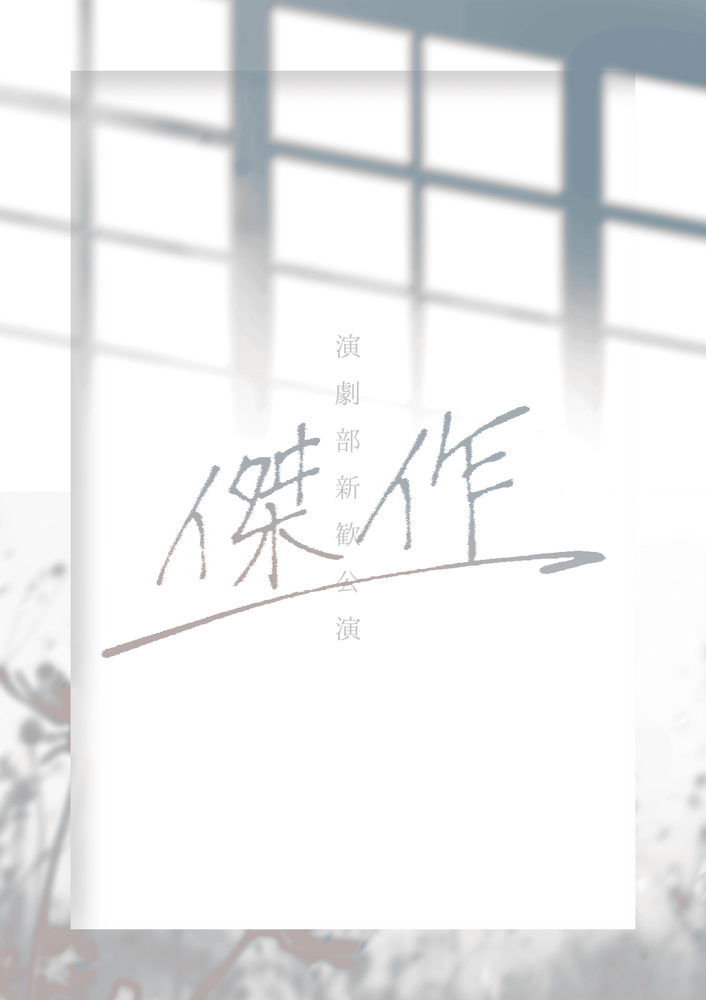
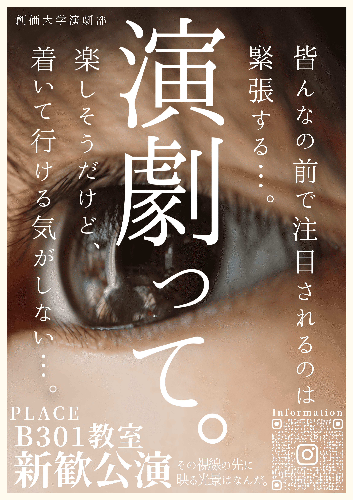
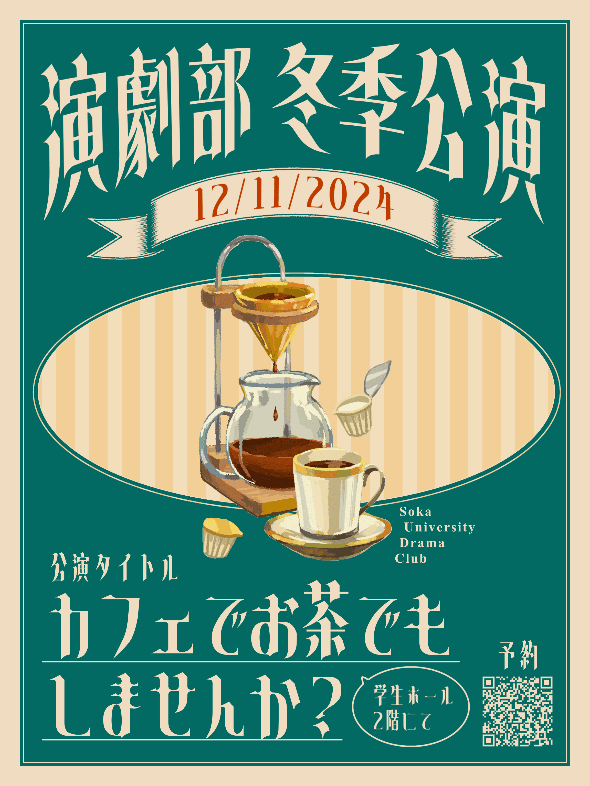
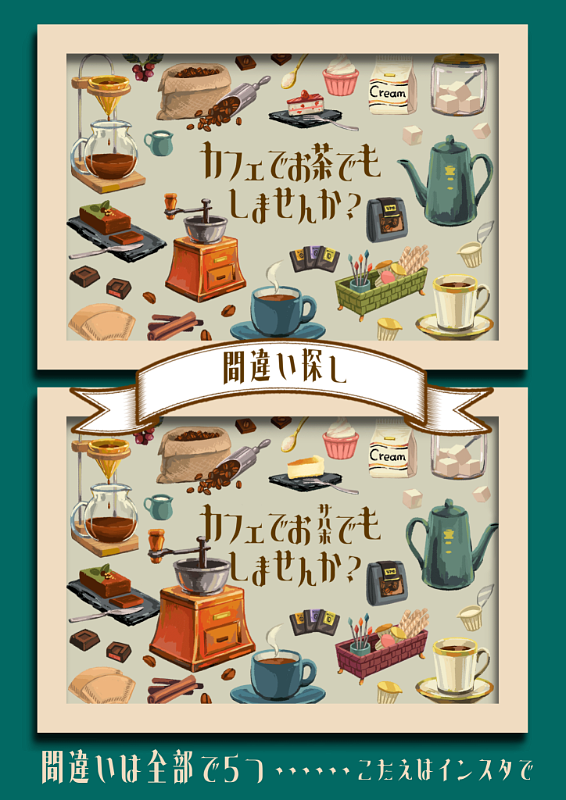
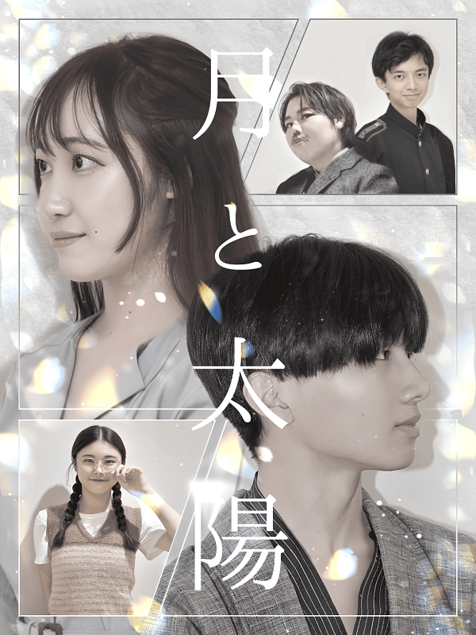
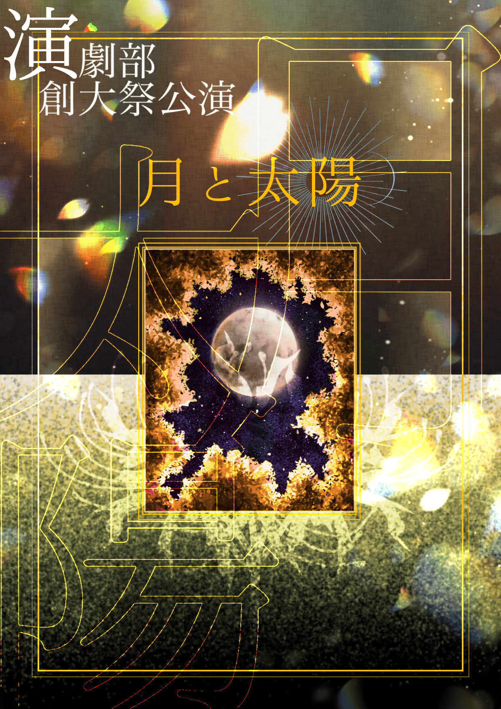
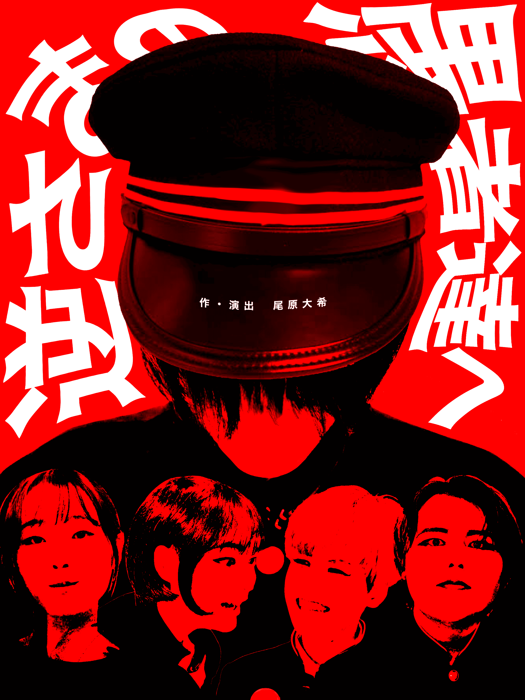
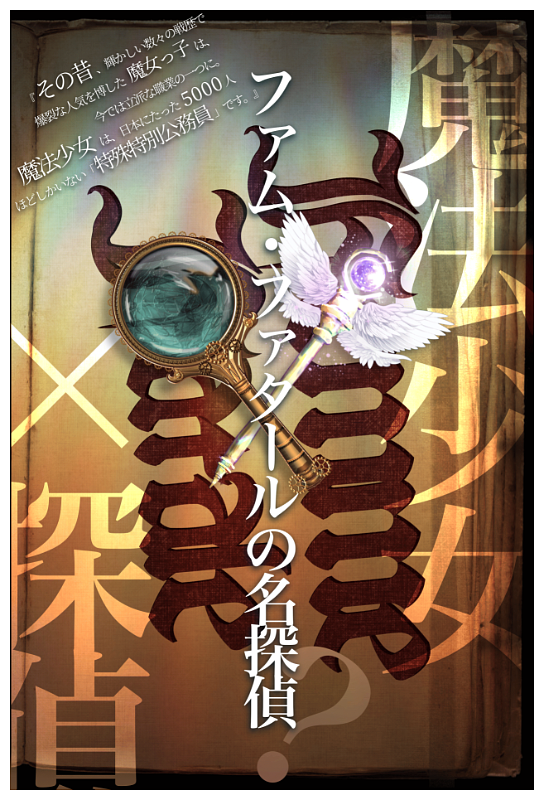
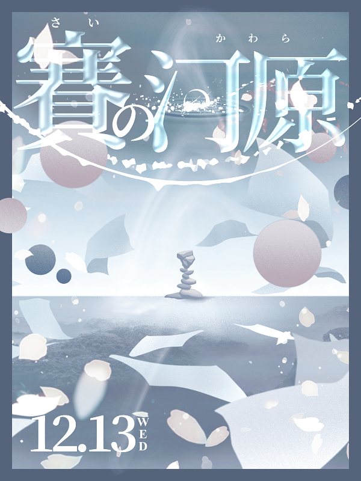
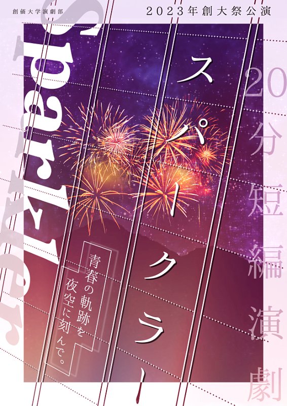
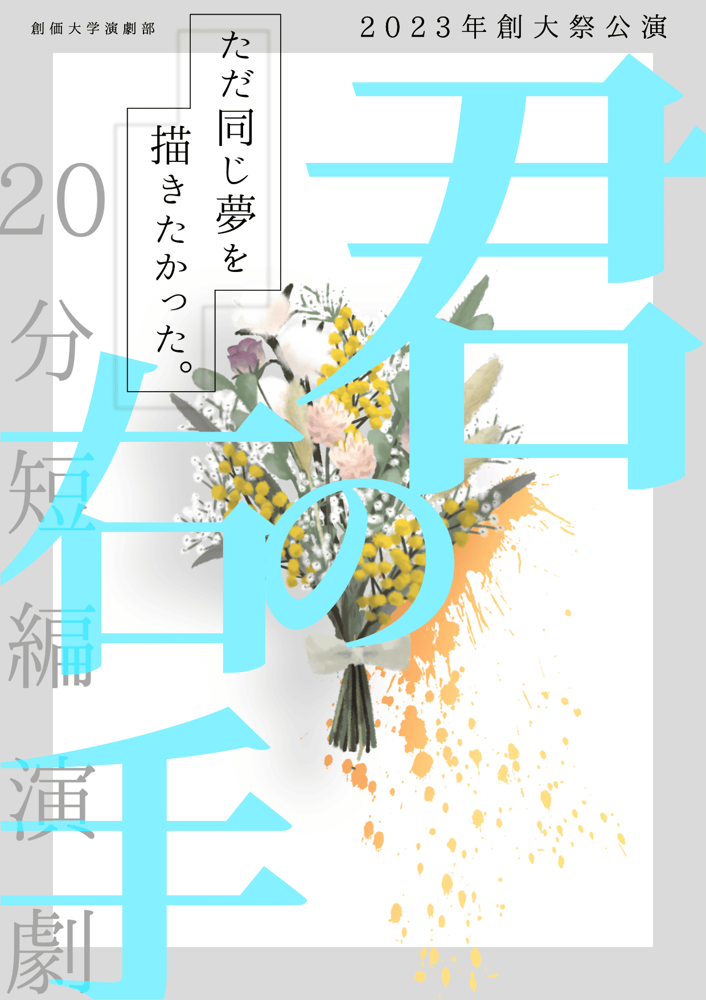
創価大学演劇部 SUDC は、学生主体で創作・稽古・舞台制作を行う演劇団体です。 年間を通して複数の公演を開催し、役者・演出・脚本・音響・照明・制作など多様な役割で活動しています。
一人一人が輝く演劇部(ぶたい)へ
誰か一人ではなく、役者もスタッフも含め、一人一人が輝ける場所を目指しています。
一瞬一瞬を自己練磨の挑戦(ぶたい)に
舞台づくりを通して、自分自身を磨き、挑戦し続けることを大切にしています。
一人(あなた)の心に届く舞台を
目の前の誰かの心に届く作品を届けるために、細部までこだわって舞台を創っています。
舞台を支える、さまざまなセクション
実際に、大学から演劇や舞台制作を始めた部員も多く在籍しています。
日程：20○○/〇/〇〜〇
場所：創価大学 ○○ホール
演劇が初めてでも大歓迎。役者・脚本・音響・照明・制作など、 舞台を作るあらゆる役割に挑戦できます。
あなたの適性をカードが導き出します
全7問の質問から、演劇部におけるあなた向きの「最強の役職」を決定します。
CARD 01
ANALYZING...